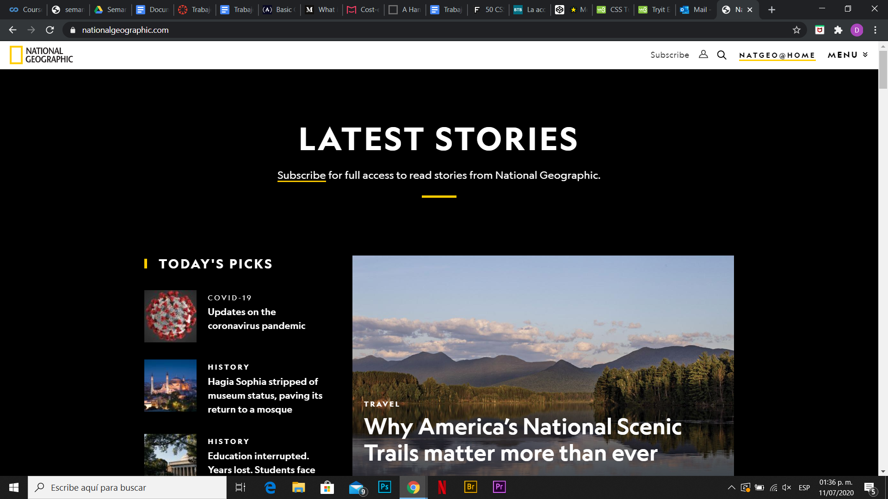
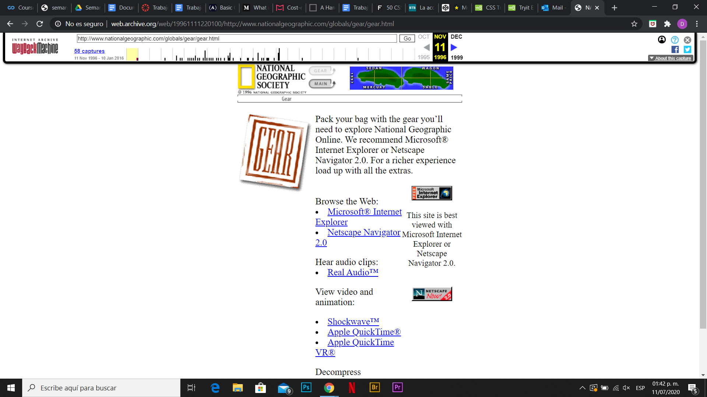

¿Qué es lo más importante que aprendiste en la semana 1?
Creo que lo más importante que aprendí durante la semana 1 fue a utilizar de mejor manera las etiquetas de HTML y algunos elementos básicos del diseño interactivo. Lo más importante que aprendí en la segunda semana fue a utilizar CSS de mejor manera.
¿Para qué sirve CSS? ¿De qué manera es importante para el diseño interactivo?
CSS funciona para modificar el estilo de un documento HTML, es decir, modifica lo que se va a presentar en pantalla. El CSS es importante para el diseño interactivo porque permite una visualización más amigable con el usuario y permitiendo una mejor interacción.
Aunque no vea o no entienda el CSS , ¿cuáles son las formas en la que la experiencia del usuario mejora usando CSS de manera adecuada? Da 1 ejemplo y 1 contraejemplo.
CSS afecta la experiencia del usuario positivamente si se escogen los colores correctos, el tamaño, la letra, entre otras propiedad, para que la página luzca más atractiva. Ejemplo: Un ejemplo es que CSS te permite cambiar el color del background, como en la página de NatGeo.
Contra ejemplo: Sin CSS, una página se vería de esta manera, es decir, sin estilos.

Investiga cuáles son las maneras de incluir css en un documento html. Haz una tabla con ventajas y desventajas de cada forma.
| En línea (Inline) | Incrustado (embeded) | Externos (External) | |
|---|---|---|---|
| Ventajas | Es una solución rápida si quieres modificar solo una etiqueta. | Todo está escrito en un solo documento y sería más rápido modificar ciertos elementos. | Puede que de esta manera tu código sea más ordenado. Lo puedes reutilizar en otra página. |
| Desventajas | No se pueden repetir en otro documento html. Rara vez se utilizan | No se pueden repetir en otro documento html. Si no existe un orden, puede que el código sea tan grande que sea difícil de trabajar. | Al tener dos archivos por separado, si se llegase a perder uno, tendrías que repetir el CSS completo. |
Realiza una página html usando css. Deberás usar al menos 10 reglas de estilo. La página debe de ser una observación propia durante la semana de una actividad que hagas. Debes incluir imágenes (fotos) y descripción en texto de esa actividad en la página html/css.